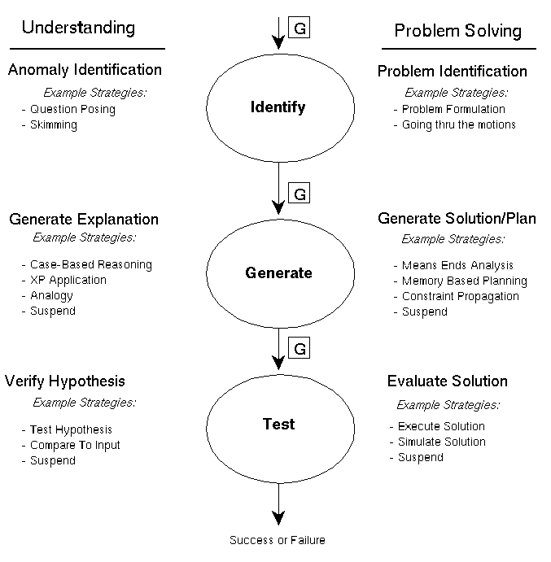
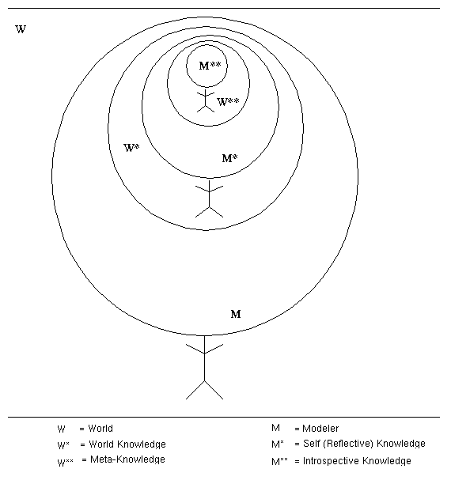

Table of Contents
Table of Contents
 Previous Chapter
Previous Chapter
Table of Contents
Previous Chapter
But would the above assassin not feel different if she knew that the president-robot had a sense of self? Like the computer who developed a personality in The moon is a harsh mistress (Heinlein, 1966) and then reverted to its original state at the novel's close, wouldn't we all feel badly if we had first known the robot through conversations and interactions? During conversations, the robot might explain its goals, biases, past experience, and perhaps an opinion of itself. The robot might even have the goal of self-preservation.(2) What if, as envisioned by McCarthy, it really had consciousness?(3) When I read Heinlein's story, I sympathized with the machine. If the robot-president was real, an assassination might be quite disturbing. Although the need to answer the above questions is far from immediate, research into the mental lives of machines and people is starting to blur the line between science fact and science fiction.
The aim of this chapter is to secure the dissertation in the larger context of creating an integrated architecture of intelligence and learning. I make some speculative comments with respect to this problem by examining the kinds of processes (Section 13.1) and the kinds of knowledge (Section 13.2) that must be integrated for a general thinking machine. Obviously such proposals are monumental, and therefore success cannot realistically be defined in terms of a final product. Rather, it is theoretical progress towards Turing's vision of a program that can pass some variation of an intelligence test that, although provocative, is not an unreasonable goal (Section 13.3).
This thesis has examined an introspective approach to learning within the context of a story understanding task. We have also experimented with using the same approach to learning when problem solving given two troubleshooting tasks. The Meta-AQUA system was modified to model learners in a LISP programming task and the Meta-TS system modeled human protocols while learning an electronics diagnostic task. Chapter V briefly discussed the relationship between problem solving, understanding, and learning from a structural perspective. That is, the section compared and contrasted features of each process and drew parallels between such features. However, the chapter never specifically proclaimed how the processes might be integrated into a gestalt or how they might interact. Moreover, Section 5.4 claimed that the multistrategy paradigm was a natural one for integrating the performance and learning tasks, but it was not very specific either. This section considers again this integration question and speculates as to a possible functional merging of problem solving, understanding and introspective learning.
Both Birnbaum (1986) and Wilensky (1983) discuss integration approaches to problem solving (in the guise of planning) and understanding. Birnbaum argues convincingly that both planning and understanding processes need to use an early integration of bottom up and top-down information to constrain the explosion of inferences inherent in both processes. Wilensky asserts that knowledge of goals and plans is instrumental in the successful performance of both planning and understanding tasks. Yet, Wilensky and Birnbaum both discuss planning and understanding as otherwise unrelated tasks. In their writings, they do not attempt to specify an integrated architecture within which both processes could be unified. The two researchers also view the scope of understanding as being limited to natural language (although Wilensky briefly mentions the possibility of understanding based on video tape images). Finally, they are viewing understanding as the task of comprehending other agents or characters in a story, rather than understanding the actions of the self. The major contribution of their work is the recognition that processes such as these must integrate many knowledge sources and that many processes need to use the same knowledge sources. Processes cannot be insulated from each other by the overly-restrictive modularity of computation. This section furthers the integrative view, arguing that understanding and problem-solving are intimately related in the following ways.
Newell and Simon (1972) postulate an initial problem solving stage that translates an input problem statement into an internal problem representation and problem space.(4) Although Newell and Simon downplay the significance of this stage (p. 850), Greeno and Riley (1987) suggest that it is at this point in the process that much of the potential for solving the problem is either established or, if the wrong understanding of the problem is obtained, is lost. They argue that better problem solvers have a better problem-understanding ability, and it is at the early stages that understanding becomes critically engaged in the problem-solving process. Furthermore, Greeno (1977) likens the understanding of a problem statement to the understanding of a sentence. Both include the construction of a representation that captures the major concepts in either the problem statement or the sentence. The understanding of the problem creates a representation for the solution that includes meaningful relations between the solution steps and relations to parts of the problem statement. Greeno and Riley speculate that this kind of understanding is metacognitive and consists of strategies for performance.
As with understanding a story, the schematic structures used to interpret a problem are similar to scripts (Schank & Abelson, 1977). The development of a child's ability to solve problems is related to the acquisition and refinement of these problem-solving schemas (Greeno & Riley, 1987). This result is compatible with the assertions presented in Section 8.5.3, "Learning about higher-order knowledge," starting on page 201. This section asserted that an important learning task in Meta-AQUA was to refine script and other schematic knowledge structures and was not limited to the development of conceptual categories alone.
This section, however, takes the relationship between problem-solving and understanding a few steps further. The understanding processes involved in problem solving is not limited to making sense of a structured problem statement provided to a learner in a formal setting (e.g., classroom or work environment). In an unconstrained world, a significant task component is to identify those situations that require problem solving. That is, a learner must be able to understand when novel problems exist, must be able to formulate an understanding of the circumstances that can lead to a solution, and must be able to generalize the conditions so that similar problems can be recognized in the future.
As will be remembered from Chapter V, we consider reasoning in general to be a type of generate-and-test procedure with an initial interestingness identification phase. In this framework, problem solving, as well as understanding, can be cast in multistrategy terms. Understanding involves detecting an interesting input and then choosing or constructing a strategy with which to explain the input. Likewise, problem solving requires the reasoner first to determine something interesting that constitutes a problem and then to choose a problem-solving algorithm or to assemble a problem-solving strategy. Sometimes, the problem is as simple as not being able to perform some previous task, so a problem goal arises as an impasse (Etzioni et al., 1992; Newell, 1990). At other times, problem-solving goals may arise from role, interpersonal, and life themes (Schank & Abelson, 1977). But, most interestingly from a learning point of view, goals may arise because of the lack of knowledge (Ram, 1991). That is, a problem may be formulated when an item is interesting because one does not know much about a subject.(5) Ideally and as with learning, the reasoner might use some method of introspective deliberation to create its reasoning strategy in all of these cognitive tasks.
Parallels exist throughout the framework in which these two processes are cast (see Figure 101). For both understanding and problem-solving, if no significant or interesting input exists in the environment, the system processes the input in a "mindless" fashion. The understander skims the input, whereas the problem solver acts reactively (i.e., just "goes through the motions" of behavior). Given interesting input, however, the understander must generate an explanation and the problem solver must generate a solution. In both generation stages the reasoner can select a method and assemble a reasoning strategy. Figure 101 shows a few possible example choices. Finally, given an explanation or a solution, the reasoner must verify the outcome of reasoning.
 Figure 101. Relationship between understanding and planning
In this last stage, the two processes are mutually related to each other. When trying to understand an input, the understander often poses a hypothesis that requires validation. To validate the hypothesis the understander might choose to devise a test or create a plan to falsify the hypothesis. The creation of such a plan requires problem solving. Conversely, when attempting to plan for a given goal, the problem solver needs to understand whether the actions carried out during plan execution are indeed furthering the pursuit of the goal. A comprehension ability is required to provide feedback to the problem solver during plan execution (again, see Figure 101).
Functionally, reasons exist that encourage such a proposed integration.
The processes of learning, problem solving, and understanding mutually benefit and are share relationships to each other. Thus, the study of one process in isolation may leave enough questions unanswered that research results may or may not sufficiently generalize to human behavior or may not scale when engineering intelligent systems that are expected to operate in unconstrained environments.
Much of the research performed by the AI and cognitive science communities over the years has concentrated on problem solving and planning in relatively well-developed paradigms that possess optimal or provably correct solutions. Problem solvers are explicitly given their problems in tangible formats. The reasoner seldom has to consider whether the problem is worth pursuing, or what other problems might be worth tackling. Understanding, on the other hand, has received less attention. Furthermore, much of the research into understanding (e.g., research into story understanding) has treated the comprehension process in isolation without considering either action or the environment, and without considering the supertasks under which the understanding task is situated (i.e., for what purpose do story understanders read?). But research into the alliance of understanding and problem solving comes closer to the locus of intelligence than research into either alone. Surely, any unified theory of learning must eventually deal with learning stemming from both behaviors. Although the comments supplied in this section are highly premature, the suggestions fit well into the framework provided by this research.
If for no other reason, it is at least an interesting research challenge to begin to consider what the understanding process has to do with problem solving, and vice versa, and moreover, how the integration of each affects learning. Towards this aim, a number of researchers have appealed for general integrated architecture of intelligence and learning (e.g., Newell, 1990; Plaza, Aamodt, Ram, van de Velde, & van Someren, 1992; Pollock, 1989a; Ram, Cox, & Narayanan, 1992; Ram & Jones, 1995; VanLehn, 1991a). In support of this goal, an integration of knowledge sources must be considered as an important subgoal.
One of the most remarkable papers on ontological matters is a four and one half page desiderata by Minsky (1965, 1968a) concerning the mind-body problem and the assertion that human understanding is essentially the process of executing some model of the world. Minsky's thesis is most interesting because it includes the modeling of not only the world, but the self (the modeler) as well. Thus, there is W, the world, and M, the modeler(7) who exists in the world. Although Minsky's models are procedural, Figure 102 depicts the knowledge divisions implicit in his scheme. The model of the world is referred to as W*. W* is used to understand and answer questions about the world. So to answer questions about oneself in the world, it must also be the case that there exists within the model of the world, W*, a model of the modeler, termed M*. One should conceive of W* simply as the agent's knowledge of the world, and likewise, M* as the agent's knowledge of itself in the world. Furthermore, as Minsky notes, one must have a model of one's model of the world, or W**, in order to reason about and answer questions concerning its own world knowledge. Although Minsky does not label it as such, the kind of knowledge embodied in this model is typically referred to as metaknowledge. Finally, M** represents the agent's knowledge of its self-knowledge and its own behavior, including its own thinking. Within M** one might include most metacognitive knowledge of person variables (see Wellman's theory of metacognitive variables on page 273), at least concerning the self. It would have a semantic component like "I am good at general memory tasks," as well as episodic components such as knowledge gained through monitoring (e.g, "I just solved a problem by remembering a similar past solution."). Again, although Minsky does not refer to it a such, M** represents introspective knowledge.
 Figure 102. A taxonomy of knowledge
(Adapted from Cox, 1992)
This taxonomy can be extended into a framework that supports introspective learning when viewing not only oneself in the world, but others (O) as well. Wellman (1985) claims that children come to develop an understanding of themselves and the workings of their mind by observing other agents in the world. By observing others, children first learn the distinction of internal versus external reality. A naïve theory of mind first emerges from a theory shift from a simple desire-psychology to a belief-desire psychology (Wellman, 1992). This shift occurs when children observe that the actions of others do not always conform to the simpler theory. For example, two agents may have the same desires, yet perform different actions. The simple concept of desire is not sufficient to explain the anomaly. The conflict can be explained, however, if agents have opposing beliefs. If two people are hungry (desire food), they may look for food in different places because one believes the food to be in the cupboard, whereas another believes it to be in the refrigerator. Thus, children develop a theory of mind, mental events, and mental states (beliefs). Therefore, the knowledge framework that we propose should contain a modeling of others in the world as well as the self, hence O*. The taxonomy is complete by including O**, which is knowledge of one's knowledge of and confidence in social interactions.
Additional distinctions exist that must be integrated. One such dimension is the distinction between internal and external versions of each of the taxonomic categories. For example, there is reflective knowledge concerning one's own actions in the world as well as knowledge of one's own thinking. These are both reflective knowledge in M*, but its seems reasonable to distinguish the two kinds since one is usually objective, whereas the other is often subjective. Moreover, people can learn things about themselves, both about their own external behavior and their own internal workings of reason, via the knowledge of verbal reports of others (that is, via O*). For example, rather than learning from introspection or self-monitoring, people may gain some insight into their own reasoning ability by listening to lectures in cognitive psychology. It is, an open question, however, as how best to integrate such nuances.
Contrastingly, Chi (1987) develops and utilizes a consistent distinction between process and state, emphasizing the representational difference between processes, such as cognitive strategies, and mental states, particularly the knowledge states of the individual. In her taxonomy, processes are represented procedurally in condition-action rules, whereas knowledge is represented declaratively with semantic, propositional net structures. The analysis further divides process into domain-specific procedures, domain-independent, goal-based strategies, and meta-strategies, which evaluate the applicability of ordinary strategies. Declarative knowledge is likewise subdivided into domain-specific knowledge, general knowledge and metaknowledge, that is, knowledge about other propositions or about the self. Furthermore, her analysis argues that a difference exists between meta-procedures and ordinary procedures; whereas no significant differences exist between declarative knowledge and meta-declarative knowledge. The former requires a function be an argument to another function, so it is second order rule that requires extra execution overhead, while declarative knowledge is uniformly stored as memory nodes in the same manner as normal knowledge, and is therefore retrieved with no additional overhead. These differences result in an alternative interpretation of the metacognition literature, whereby some effects can be explained simply by presence or lack of knowledge, rather than requiring reference to strategy or metalevel issues at all.
Finally, an additional issue exists as to the role of general versus domain-specific problem-solving knowledge. Derry (1989) considers general problem-solving knowledge to be metacognitive. It is unlikely, however, that this proposition is unequivocally valid. Perhaps it is indeed knowledge about knowledge, but as Chi (1987) suggests, facts that simply happen to be about the self or about other knowledge are much like ordinary knowledge. They are retrieved as any other fact is retrieved, adding no special properties to their content or overhead to their usage. There seems to be a difference between the way precompiled knowledge is obtained and generalized about the self and the way on-line insight of the self is processed. Minsky's modified taxonomy has nothing to say concerning this orthogonal concern. Therefore, while the taxonomy may help to visualize the divisions of knowledge and to avoid category errors in metacognitive research, it alone is not sufficient when describing all elements that bear on relevant aspects of metacognition. Together with Wellman's (1983) and Chi's (1987) taxonomies of metacognitive knowledge, the taxonomy of Figure 102 modified to include O, O* and O** may help draw the line between what is and is not a factor or component when investigating the role of introspection in human performance and learning.
The following section examines what it means to put all of these concepts together and speculates on some popular, yet serious, research goals. Although it considers some thought provoking questions, the tone to be set is one of suspended judgement. The concluding section of this thesis is the one section that deliberately provides no explicit answers or strong opinions; instead, it requests that the reader decide.
Many papers have discussed Turing's (1950/1963) famous test of computer intelligence. In his essay, he poses the question "Can machines think?" and subsequently transforms it into a more operational question. Turing's Imitation Game is designed to test whether or not a computer can perform as well at imitating a woman as another man, given a human judge and the cloak of video-terminal output. If by posing questions to both agents the judge cannot distinguish on an above average basis the man's responses from the program's responses, then the computer is considered intelligent and capable of thought.
A number of researchers have interpreted this test in various ways, including removing the requirement of gender association. In recent years, Hugh Loebner, President of Crown Industries, established a $100,000 cash award for anyone who can design a program that passes the Turing test in a limited domain (Loebner, 1994; Zeichick, 1992). Instead of an open-ended question/answer session between judge and contestants, the programs answer questions in a specific knowledge domain chosen by the programmer. Even granted these concessions, the Loebner Prize remains unclaimed. The programs seem to be getting close enough to winning, however, that Loebner is making more strict demands on the contest rules. Thus for the next five years, the contest will be conducted without domain limitations (Loebner, 1994). Despite Turing's belief that sufficient programs could be built by the end of the century, research must cross significant hurdles to pass the unconstrained test.
A number of problems exist even with restricted tests. Perhaps the foremost weakness of this test as a measure of intelligence is that it evaluates output alone, with no regard to how the output was obtained. If a performance task's output constitutes the only measure by which one can conclude that a program possesses intelligence or a capacity for thought, then one must conclude that successful chess-playing programs that win by brute force search of board positions must also possess thought. But certainly human chess champions do not win through search alone. So to improve the Turing Test, the programs should be required to agree with known human limitations and to conform to accepted psychological theories. This makes it less likely that a system can pass the test by simply brute force computation.
Schank (1986, and Searle, 1980, 1990) also notes the weakness of output as an evaluation metric in the Turing Test. Schank claims, however, that language is the only practical method of judging intelligence because judges can open the heads of neither people nor machines. Moreover, he asserts that explanation is the ultimate criterium of intelligence. To improve Turing's Imitation Game, then, Schank proposes the Explanation Game. In this test, an agent's ability to explain its own reasoning is the focus of evaluation. Both the human and the machine are given mental tasks to perform. The judge then can ask how they actually performed the mental behavior or how they produced the constructed outcomes. Furthermore, answers are not absolutely correct or incorrect in the Explanation Game. For a contestant to explain what it does is passing the test at the level of only making sense. To explain why it reasons as it does is to pass at the level of cognitive understanding. The upshot of the test is that someone who is intelligent and insightful can not only perform intelligent activities, but can explain how and why they think as they do.
Although IML theory represents a prolegomenon toward competition in the Explanation Game, Meta-AQUA can currently play the Explanation Game to only a limited extent. Because the first-order performance tasks (explanation and understanding) is at the periphery of concern, the game is not entertained with any serious intent at this time. Nonetheless, the focus has been on second-order performance (introspection) that constitutes the key component for any system that must explain its own reasoning or must understand itself in any meaningful way. But, to truly qualify for the competition requires more research than can be finished in a reasonable time. The intelligence game is more complex than what we have described so far.
Descartes had a much more skeptical opinion on the possibility of playing these games than either Turing or Schank. Although Descartes was convinced that replicating intelligence was impossible, he was intrigued by the thought of simulating animal and human behavior and thereby increasing the understanding of their mechanics. Indeed, he formulated the first version of the test more than 300 years before Turing reinvented the game.
Descartes' claim is that language, reasoning and knowledge are all integral to intelligence when separating man from machines. The use of knowledge includes all parts of the taxonomy discussed in Section 13.2, including self-knowledge, an especially human feature. Reasoning includes all of the processes discussed in Section 13.1 including introspection. Furthermore, Crockett (1994) claims that learning is critical for any machine's attempt to pass the Turing Test. The program must learn more than rote memorization of the prior pieces of the dialogue during the test. Even given a limited domain, if the judge adds new or hypothetical information relevant to the domain, the program must be able to incorporate this information with what it already knows and make a reasoned comment on the implications of the information (Crockett, 1994). This unfortunately places us in the untenable position of replicating most of human cognition in order to administer a fair test.
Despite the specifics of the test, it appears that a machine must master both learning and introspection in order for it to successfully compete in either Turing's or Schank's exams. Knowledge of the world or specific domains is not enough. Knowledge of the self in context with the world is equally important. Neisser (1993; 1995) argues that humans measure knowledge with respect to the self when in the context of problems and understandings of the environment.(8) An understanding of one's self would include an acquired self-evaluation. Like Wellman's (1985) person variables, the machine should learn than it is gifted (or deficient) at certain tasks and be able to use this information in its strategies and in its explanations of its own performance.
Both Descartes and Searle were overtly pessimistic about the modeling endeavor; both Turing and Schank are overly optimistic and wish to make operational the concept of intelligence; I tend toward agnosticism. I do not wish to herald the coming of a revolution that is still far-removed, as have others who have studied the parallel between metacognition in humans and machines. For example in the concluding paragraph of a chapter from an expert-systems textbook, Lenat, Davis, Doyle, Genesereth, Goldstein and Schrobe (1983) proclaim the following:
Which human dimension they believe machines have surpassed is uncertain, but it is surely not along the dimension of expert systems knowing themselves, even when given the limitations of human insight. As for their implied prediction concerning the coming impact of self-description and self-modification, no momentous changes have appeared in the last dozen years due to this research. Rather, people such as Buchanan and Smith (1989) are being far more conservative in their statements, claiming that "Expert-systems have little or no self-knowledge" (p. 186). Indeed, many researchers, from Clancey in the AI community to Chi in the psychology community, now tend to avoid altogether the use of words beginning with the prefix "meta" (i.e., the M-words). Rather than run the risk of the boy who cried wolf too often, I see room for quiet progress and methodical evaluation before grand predictions can be announced. Knowing fully well the hardships of building even a modest implementation that incorporates some of the levels necessary to model intelligent thought, the goal of concocting a machine of general intelligence is probably beyond our reach, at least in this lifetime.(9)
Regardless of the pragmatics of passing an intelligence test, the business of AI is to develop theories of intelligence, while programs are simply one tool for the research to evaluate these theories (Ram & Jones, 1995). In support of this goal, AI offers the rest of the cognitive science community an ability to think about and to test numerous integrations of processes and knowledge (Schank, 1979, p. 221). Thus, just making progress toward the development of a theory of intelligence and learning and being able to try out different integrations are the important goals; the programs are only the means by which we achieve such an end. In the limit, it does not matter whether Descartes or Turing was correct, nor does it matter whether Schank or Searle had the better position. Research into these issues will benefit an understanding of intelligence and learning either way.
Table of Contents
 Next Chapter
Next Chapter